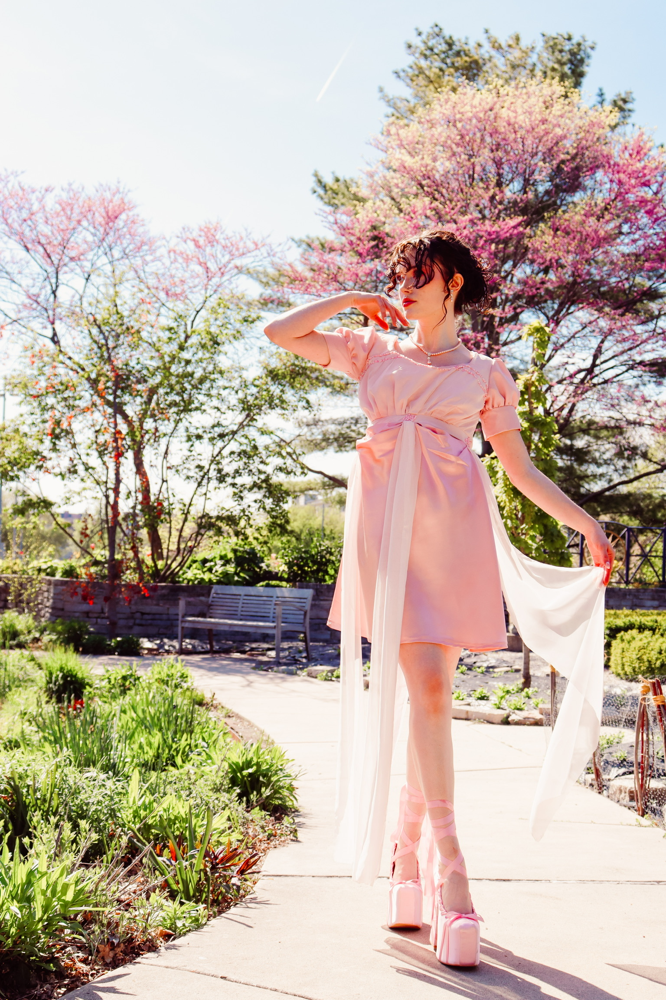
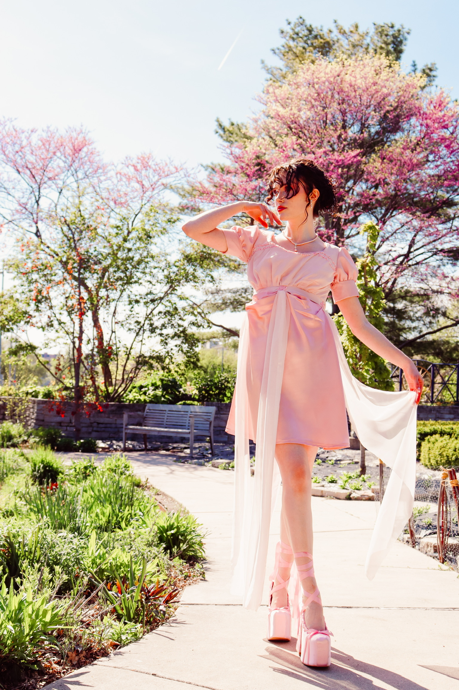

Regencia
About the Project
‘Regencia’ draws inspiration from the Regency era, combining styles from the past with modern twists.
Drapery is played with, especially shown in the cowls along the waist of the skirt, and flowing yards of chiffon, allowing the dress to come alive with movement.
Hand beading is found along the neck of the dress and the waist, rewarding a closer look.
Materials: Satin and chiffon, glass beads, metal grommets
 
